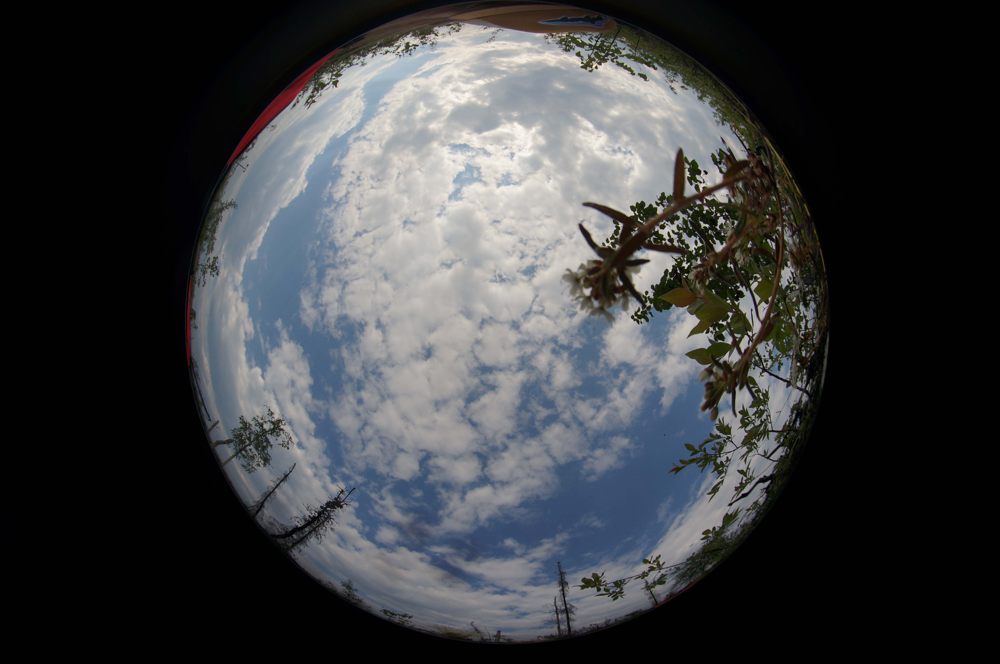
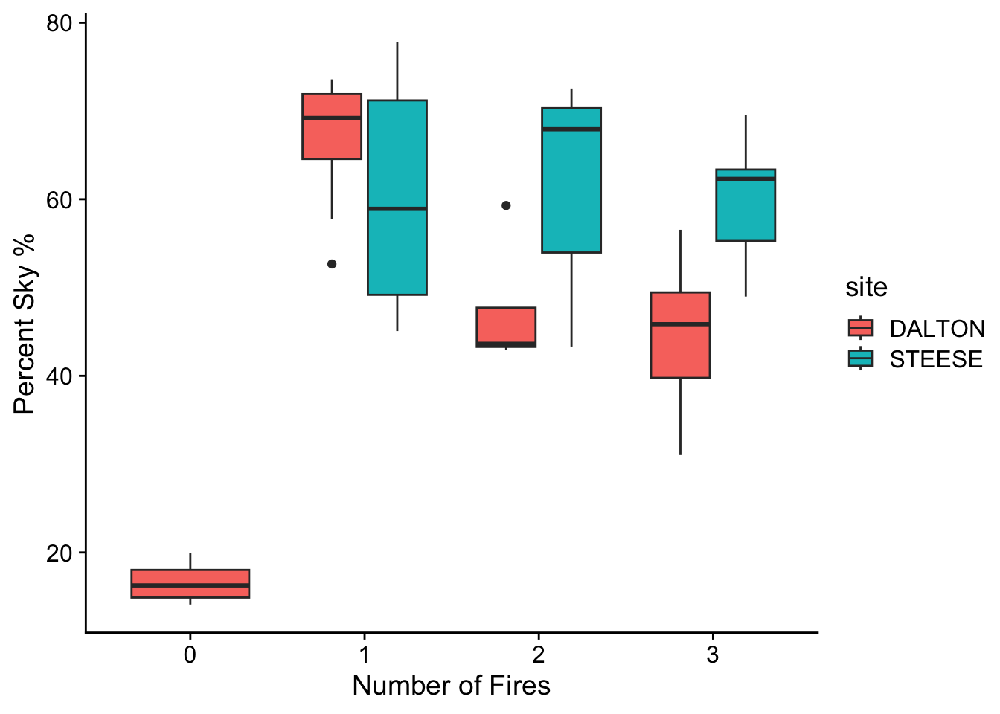

Calculating light availability from fisheye photos
How to use the package hemispheR
Ft. pretty pictures
Spatial Data Analysis
Workflow
Published
August 19, 2024
Modified
August 23, 2024
As part of my PhD trying to capture the impact of reburning on boreal forests, I measured understory plant communities in my study sites. I don’t have a background in community ecology, but have been working with a labmate and friend to understand the impact of reburning on the communities we measured. As part of that effort, I’ve been curious about light availability - the reburned stands I worked in as a PhD became more and more open with more reburning, and presumably that means more light would reach the understory.
In order to capture the light coming through the canopy in these sites, there was a moment in our sampling protocol where we set up a camera with a fisheye lens on a flat surface in the middle of the plot, laid down on our backs trying to hid in the vegetation around us, and looked up at the sky.1
1 My favorite part of sampling, for the record.

We weren’t always able to sneak out of the frame successfully, peep my trusty field hat at the top
To convert pictures like these into measurements of the light coming through the canopy, I’ve been exploring how to use the hemispheR package in R.
Introduction to hemispheR
hemispheR was built to help process digital hemispherical photography (DHP) (Chianucci and Macek 2023). It calculates leaf area index, a ratio of total leaf area of vegetation to the surface area grown, using equations predicting the relationship between the surface area of leaves and the fraction of light they intercept.
While leaf area index is really useful, I’m mostly interested in light availability more broadly - I’m really just looking for the fraction of canopy to open sky. hemispheR classifies pixels within an image as either canopy or sky as a step to calculating leaf area index, so it should work great for this.
I’ll start by importing one of our canopy photos. Here’s the image:
This is a picture from one of our mature plots - note the black spruce all around the edges of the photo.
import_fisheye() imports the photo as a raster, defining the edges of the picture.
There’s one issue here - it seems like the binary classified the bottom half of the sky incorrectly. How can we fix that?
One option is zones: setting zonal = TRUE in binarize_fisheye() tells the function to split the image into four zones, calculating each separately. Let’s try it:
That’s a lot better, but still not perfect. Note how there’s now 4 different threshold values. Threshold values are set automatically, but you can also set them manually.
# using the smallest value from the zones aboveph23_3bin <-binarize_fisheye(ph23_3, manual =37, display =TRUE)
Now that matches the raw picture. and the percent sky?
ph23_3data <-as.data.frame(ph23_3bin) # 0 is canopy # 1 is skyround(length(which(ph23_3data ==1)) /nrow(ph23_3data) *100, 2)
[1] 83.3
Automating hemispheR
Now, I’d like to replicate this 50 times, reading in each picture and extracting the ratio of canopy to sky. Here’s the code to do so:
# Define the path to your folder containing JPG filesfolder_path <-"data/canopy pictures/"# List all JPG files in the folderfile_list <-list.files(path = folder_path, pattern ="\\.JPG$", full.names =TRUE)# Initialize an empty data frame to store resultsresults <-data.frame(plot =character(),ratio =integer(),percentSky =integer(),stringsAsFactors =FALSE)for (file_path in file_list) { photo <- hemispheR::import_fisheye(filename = file_path,circular =TRUE, message =FALSE) photo_bin <-binarize_fisheye(photo, zonal =TRUE) photoData <-as.data.frame(photo_bin) ratio <-length(which(photoData ==1)) /length(which(photoData ==0)) percentSky <-length(which(photoData ==1)) /nrow(photoData)# Append the results to the data frame results <-rbind(results, data.frame(plot = file_path,ratio = ratio,percentSky = percentSky,stringsAsFactors =FALSE ))}results <- results %>%mutate(plot =sub(".JPG", "", sub(".*//", "", results$plot)),treat =as.numeric(sub(".*_", "", plot)))results <-left_join(results, index, by =join_by(plot, treat))
kable(head(results))
plot
ratio
percentSky
treat
site
10_0
0.1785791
0.1515206
0
DALTON
11_0
0.2489218
0.1993094
0
DALTON
12_1
1.3648933
0.5771479
1
DALTON
15_3
0.8467842
0.4585182
3
DALTON
16_2
0.7529837
0.4295440
2
DALTON
17_3
1.7729908
0.6393785
3
STEESE
Note: for the sake of the loop, I’m using zonal = TRUE instead of setting the manual limit. I’ve tested out both, and the results don’t differ dramatically. Think I might’ve picked the one example picture from the whole lot where the correction was made best with a manual override.
How does exposed sky differ across reburn?
So, what are the trends across all 39 pictures?
ggplot(results, aes(x =as.factor(treat), y = percentSky*100, fill = site)) +geom_boxplot() +labs(x ="Number of Fires", y ="Percent Sky %")

So, much more sky exposed in burned and reburned plots compared to our mature ones (with the caveat that we didn’t take pictures in the mature steese sites). On average, more sky is exposed in the Steese sites, but the trends are roughly the same.
What’s the relationship between exposed sky and tree density?
Presumably the mechanism for that is tree density, but now we can check the relationship between the two. I’ll load and process our density data:
density <-read.csv("/Users/katherinehayes/Library/CloudStorage/GoogleDrive-k8rhayes@gmail.com/My Drive/Work/Website/krhayes.com/posts/Post_hemispheR/data/density.csv")density_count <- density %>%group_by(SITE, TREAT, PLOT) %>%summarise(count_ha =sum(TREE_COUNT_HA)) %>%rename(plot = PLOT, site = SITE, treat = TREAT)results <-left_join(results, density_count, by =join_by(site, plot, treat))
ggplot(results, aes(x = count_ha /10000, y = percentSky*100)) +geom_point(aes(shape =as.factor(treat), col =as.factor(treat)), size =2) +geom_smooth(aes(col =as.factor(treat), fill =as.factor(treat)), method ="lm" , alpha =0.1) +labs(x ="Density (Tree per m2)", y ="% sky") +scale_color_manual(name ="Number of fires", values =c("#d73027", "#d9ef8b","#91cf60","#1a9850")) +scale_shape_manual(name ="Number of fires",values =c(15, 17, 19, 3)) +scale_fill_manual(name ="Number of fires",values =c("#d73027", "#d9ef8b","#91cf60","#1a9850"))
`geom_smooth()` using formula = 'y ~ x'
So, overall, more exposed sky at lower tree densities. The strength of that relationship differs a bit by fire history, which is interesting, and the 99% confidence intervals are pretty broad - we had fewer sites along the denser edge of that gradient.
What’s the relationship between canopy openness and solar irradiance?
I’ve also used solar irradiance2 before as a proxy for light availability. How similar are those metrics?
2 essentially the strength of the sun in a given location, measured in watts per square meter. For our analysis, we’ve calculated it in arcGIS using the solar radiation toolset which takes x and y coordinates, slope and aspect and averages incoming solar radiation across a year
solar <-read.csv("/Users/katherinehayes/Library/CloudStorage/GoogleDrive-k8rhayes@gmail.com/My Drive/Work/Website/krhayes.com/posts/Post_hemispheR/data/site_attrib.csv")solar <- solar %>%rename(plot = PLOT, site = SITE, treat = TREAT, solar = SOLAR) %>%select(c(site, plot, treat, solar))results <-left_join(results, solar, by =join_by(site, plot, treat))ggplot(results, aes(x = solar, y = percentSky*100)) +geom_point(aes(shape =as.factor(treat), col =as.factor(treat)), size =2) +geom_smooth(aes(col =as.factor(treat), fill =as.factor(treat)), method ="lm" , alpha =0.1) +labs(x ="Solar irradiance", y ="% sky") +scale_color_manual(name ="Number of fires", values =c("#d73027", "#d9ef8b","#91cf60","#1a9850")) +scale_shape_manual(name ="Number of fires",values =c(15, 17, 19, 3)) +scale_fill_manual(name ="Number of fires", values =c("#d73027", "#d9ef8b","#91cf60","#1a9850"))
`geom_smooth()` using formula = 'y ~ x'
cor(results$percentSky, results$solar)
[1] 0.2904864
cor(results$solar, results$ratio)
[1] 0.1626447
This, and the correlation coefficients seem to show that solar irradiance and the percent of sky visible from the photos aren’t really equivalent - said another way, they aren’t interchangeable as proxies of light availability. We’ve been using just solar irradiance in our analysis, and it doesn’t seem to have an impact on understory species communities - given the difference between the two, perhaps exposed sky will. Stay tuned!